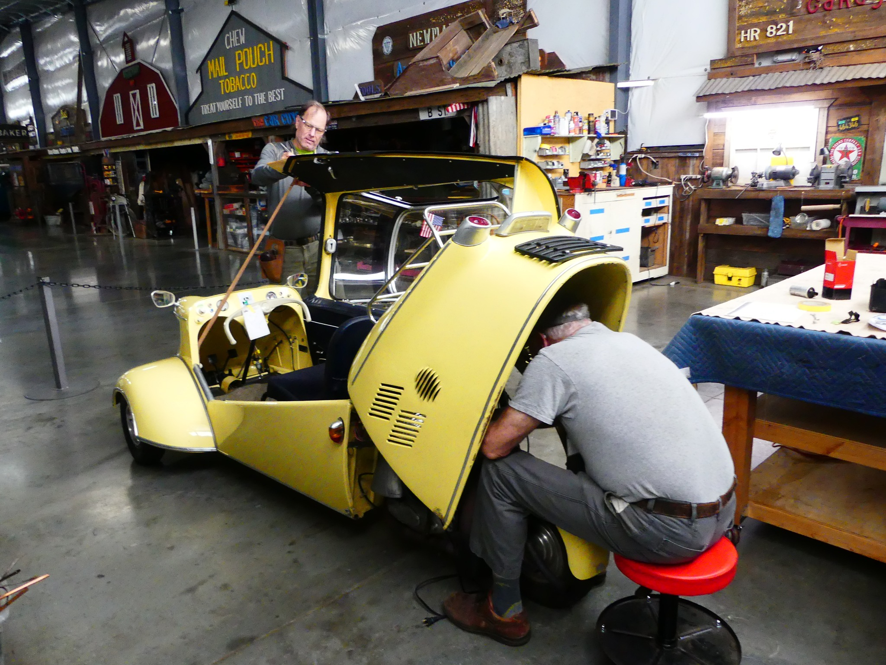

Volunteer at WAAAM
Lots of ways to be involved...& have fun at the same time!
Volunteer at WAAAM and have fun learning about antique aircraft and automobiles.
Opportunities are available to anyone 16 years of age or older who have the basic skills needed for the particular job that needs to be done.
No matter what your skills or expertise, there is bound to be some way for you to put them to good use at WAAAM.
Why volunteer?
There are lots of reasons to volunteer at WAAAM:
- You'll be able to learn about antique aircraft and automobiles.
- You'll meet people with similar interests.
- You'll be able to participate in our monthly pot lucks and other social events (we like to party!).
- You'll get great pleasure out of simply watching the thrill people feel when they tour our museum.
- You'll be able to use your skills in a meaningful way that helps others.
- You'll have access to WAAAM's awesome informational training sessions to learn new things.
- You'll be able to have some FUN!
Volunteering Hours
Opportunities are available to volunteer on an intermittent or regular basis. You can volunteer for a one-time event, for a few weeks or months at a time, or as a year-round volunteer.
We're flexible, and we'll work with you to find a good match between the hours you have available to work, and work that needs to be done.